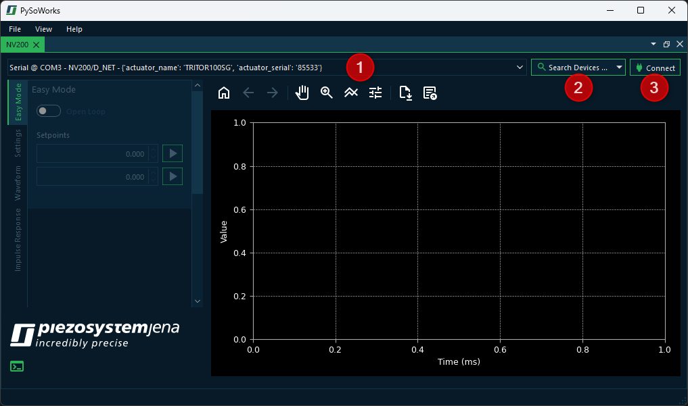
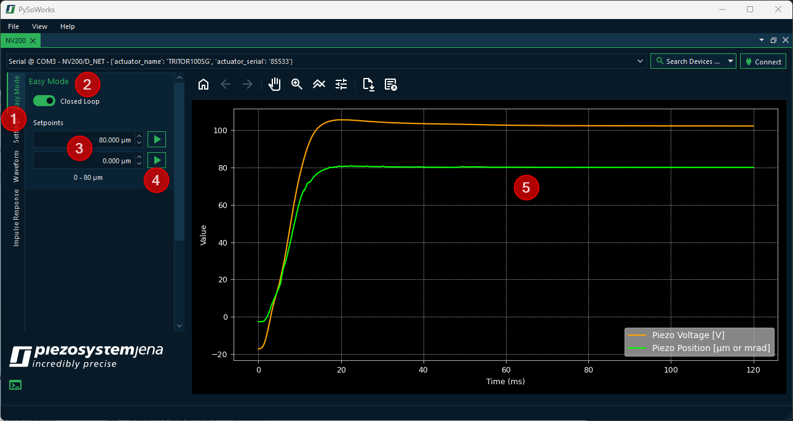

1. Getting Started
Before starting the software, your NV200 should be connected to the PC and powered on. Follow these steps:
Connect your piezo actuator to the NV200
Connect the NV200 to your PC via USB
Connect the power supply to the NV200 to switch the device on
Now you can start the PySoWorks application. Right after the start, you should see the following:

The device list ❶ shows all detected NV200 device connected via USB. If you have multiple devices connected, you can select the one you want to control. If your device is connected via Ethernet, you need to click the Search Devices button ❷. Once you have selected your device in the device list, click the Connect button ❸.
2. Easy Mode
Immediately after connecting, you will be in the Easy Mode panel. Here, you can manually move your piezo actuator by specifying a target voltage (open loop) or a target position (closed loop). This means you first need to decide whether you want to operate in closed loop or in open loop mode.
